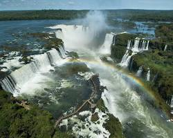

Bem-vindo ao Paraná: A Nossa Terra, a Nossa História
Este site apresenta a riqueza do **patrimônio natural e cultural do Paraná**, destacando como as paisagens, tradições e a diversidade étnica do estado moldam a sua identidade. O visitante encontrará um panorama abrangente das principais atrações paranaenses — desde as Cataratas do Iguaçu e a Serra do Mar até as cidades históricas do litoral —, acompanhado de roteiros, aspectos gastronômicos e relatos sobre a formação do povo paranaense. O estudo foca na **história, na geografia e nas manifestações culturais do Paraná**, analisando tanto seus elementos materiais (arquitetura colonial, parques nacionais e urbanismo) quanto imateriais (tradições culinárias, lendas e festividades). A relação desse tema com a arte e a cultura local é direta e profunda: a natureza exuberante e a fusão entre heranças indígenas, tropeiras e de imigrantes europeus e asiáticos servem de inspiração constante para a literatura, a pintura, a música e o artesanato produzidos no estado, consolidando uma expressão artística única e viva.

Sobre o tema
O Paraná é um estado surpreendente do Sul do Brasil que combina maravilhas naturais icônicas, como as Cataratas do Iguaçu e o imponente Pico Paraná, a uma rica identidade cultural visível na gastronomia do barreado e na herança das cidades históricas. Integrando o charme de paisagens preservadas à modernidade e ao urbanismo sustentável de Curitiba, o destino oferece experiências inesquecíveis para aventureiros, apreciadores da boa mesa e viajantes em busca de roteiros completos e acolhedores.

Principais Pilares da Identidade Paranaense
A importância cultural do Paraná reside no seu rico mosaico étnico e histórico, moldado pela ancestralidade indígena, pela herança dos tropeiros e pela marcante presença de imigrantes europeus e asiáticos. Essa diversidade se reflete em tradições únicas, com destaque para a gastronomia típica do barreado e do pinhão, além do contraste harmonioso entre o patrimônio arquitetônico colonial das cidades históricas e a modernidade sustentável de sua capital.

Curiosidades
COLOQUE O TÍTULO AQUI
INSIRA A CURIOSIDADE 1 AQUI
COLOQUE O TÍTULO AQUI
INSIRA A CURIOSIDADE 1 AQUI